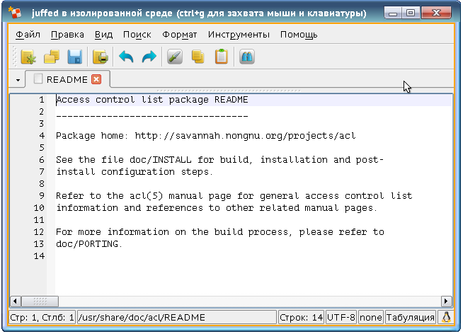
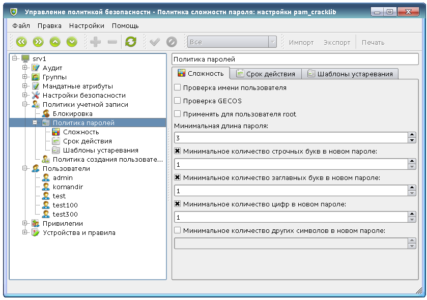
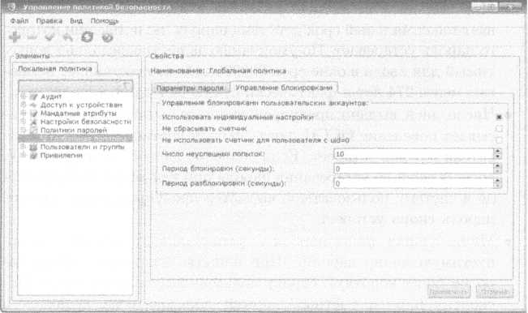
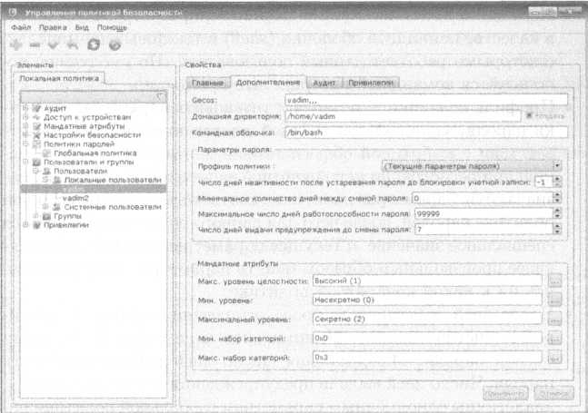
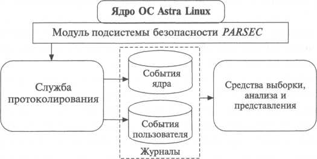
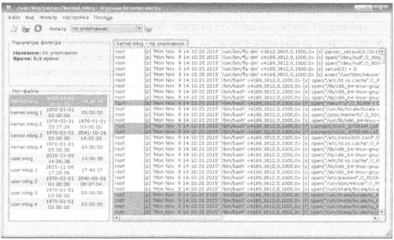
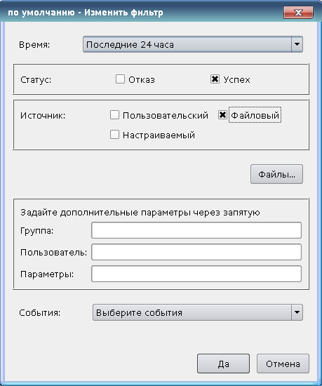
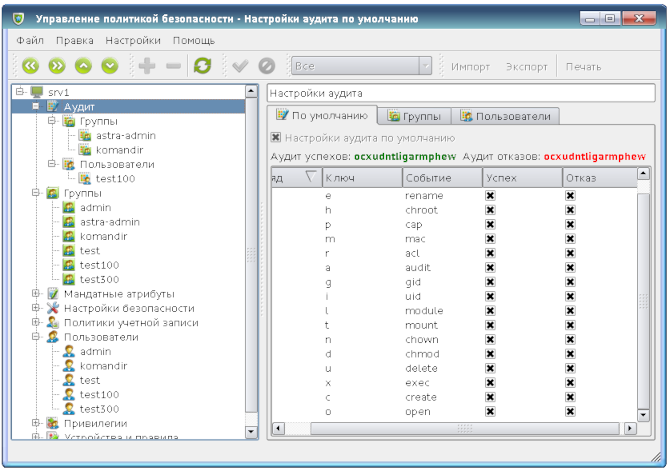

1. Мандатный контроль целостности
В настоящее время большинство успешных взломов ОС реализуются с применением программных закладок.
Программная закладка — это небольшая по объёму кода программа, которая скрытно внедряется в атакуемую систему и предоставляют нарушителю скрытный доступ к ресурсам атакуемой ОС, вносит уязвимость в её подсистему безопасности, противодействуют антивирусному ПО, пакетным фильтрам, системам обнаружения атак и т. д. Компьютерные вирусы и сетевые черви являются частными случаями программных закладок.
Степень уязвимости ОС в отношении программных закладок в основном определяется двумя взаимосвязанными факторами:
Мандатный контроль целостности (Mandatory Integrity Control — MIC) в основном предназначен для того, чтобы затруднить программным закладкам внедрение в защищаемую ОС и дальнейшее функционирование в ней. В качестве побочного эффекта нейтрализуется угроза вывода ОС из строя некорректно работающим инсталлятором или деинсталлятором прикладного или системного ПО, ненамеренно повреждающим критически важные программные модули ОС.
Как правило, при реализации в ОС мандатного контроля целостности её сущности разделяются на несколько уровней целостности (в ОССН реализованы два уровня целостности: «Низкий» и «Высокий»), чем выше уровень целостности сущности, тем более важна данная сущность для обеспечения корректного функционирования ОС, и тем выше требования доверия к процессу, модифицирующему данную сущность.
Мандатный контроль целостности, как это формально определено в рамках МРОСЛ ДП-модели, не допускает модификации сущностей с высоким уровнем целостности недоверенными процессами с низким уровнем целостности.
МРОСЛ ДП-модель — мандатная сущностно-ролевая ДП-модель.
ДП-модель — модель логического управления доступом «Д» и информационными потоками «П».
Обращения процессов ОССН к сущностям, потенциально нарушающие их целостность (операции записи, перемещения или удаления, понимаемые в широком смысле вариантов их реализации), разрешаются только в том случае, когда уровень целостности процесса не уступает уровню целостности сущности, к которой он обращается. Другими словами, модификация низкоцелостным субъектом высокоцелостной сущности запрещается независимо от дискреционных или мандатных прав доступа процесса к сущности. Модификация сущностей ОССН, важных с точки зрения её безопасности, разрешается только доверенным процессам, выполняющимся от имени привилегированных учётных записей пользователей с высоким уровнем целостности. Для ограничения возможностей перемещения или удаления критически важных сущностей присваивается соответствующий уровень целостности контейнеру, содержащему такие сущности.
Процесс, выполняющийся на низком уровне целостности, не имеет возможности:
В начале сеанса работы с ОССН пользователь выбирает уровень целостности для корневого процесса своей пользовательской сессии. Если для сессии выбран низкий уровень целостности, то все процессы, выполняющиеся в ней, гарантированно выполняются на низком уровне целостности.
Если нарушителю удалось выполнить свой программный код в рамках такой сессии, возможности нарушителя будут сильно ограничены. Этот код не способен ни обеспечить собственную автоматическую загрузку в следующей сессии того же или другого пользователя, ни эффективно скрывать свое присутствие в ОССН от утилит администрирования и антивирусного ПО. В результате ПО, используемое нарушителем и не проникшее на высокий уровень целостности, как правило, не в состоянии причинить атакованной ОССН сколько-нибудь заметный долговременный ущерб.
Заметим, впрочем, что низкий уровень целостности не ограничивает возможности ПО нарушителя по несанкционированному доступу к пользовательским данным, хранящимся и обрабатывающимся в ОССН. Если нарушитель имеет возможность многократно повторять внедрение программной закладки в атакуемую ОССН (например, эксплуатируя критическую уязвимость в её коде), наличие мандатного контроля целостности не создаёт нарушителю серьёзных затруднений, здесь защита от утечки конфиденциальных данных должна осуществляться с применением мандатного управления доступом.
Большинство пользовательских сессий должны стартовать на низком уровне целостности. Высокий уровень целостности следует выбирать только в том случае, если пользователь решает задачи администрирования системного ПО, настройки или конфигурирования ОССН в целом. Сессии с высоким уровнем целостности не должны использоваться часто, чем это необходимо.
В ОССН мандатный контроль целостности по умолчанию отключён — всем сущностям ОССН назначается низкий уровень целостности. Для включения мандатного контроля целостности необходимо отредактировать скрипт инициализации файловой системы /usr/sbin/pdp-init-fs.
Для использования мандатного контроля целостности необходимо модифицировать сценарий pdp-init-fs, установив в 1 значение переменной sysmaxilev и флаг ccnri для контейнеров с флагом ccnr, и выполнить сценарий или перезагрузку ОС.
Указанная модификация сценария позволяет установить для определенных объектов файловой системы значение уровня целостности в 1, обеспечив их защиту от изменения пользователем, работающим в сеансе с низким уровнем целостности и не имеющим привилегий игнорирования мандатного контроля доступа.
Содержимое файла pdp-init-fs:
#!/bin/bash
sysmaxlev=3
sysmaxilev=0
sysmaxcat=0xffffffffffffffff
sysmaxlbl=»$sysmaxlev:0:$sysmaxcat»
# Analyze command line options
if [ $# -gt 0 ]; then
while [ -n «$1» ]; do
case «$1» in
«—after-test»)
/usr/sbin/pdpl-file «$sysmaxlbl:ccnr,ehole» /tmp
/usr/sbin/pdpl-file «$sysmaxlev:$sysmaxilev:$sysmaxcat:CCNRA» /
exit 1
;;
esac
shift
done
fi
/usr/sbin/pdpl-file «$sysmaxlev:$sysmaxilev:$sysmaxcat:CCNRA» /
/usr/sbin/pdpl-file «$sysmaxlbl:ccnr» /dev
/usr/sbin/pdpl-file «$sysmaxlbl:ccnr,ehole» /tmp
/usr/sbin/pdpl-file «$sysmaxlbl:ccnr» /var/
/usr/sbin/pdpl-file «$sysmaxlbl:ccnr» /var/private/
/usr/sbin/pdpl-file «$sysmaxlbl:ccnr» /var/private/*
/usr/sbin/pdpl-file «$sysmaxlbl:ccnr» /var/run/
/usr/sbin/pdpl-file «$sysmaxlbl:ccnr» /var/run/mount/
/usr/sbin/pdpl-file «$sysmaxlbl:ccnr» /var/spool/
/usr/sbin/pdpl-file «$sysmaxlbl:ccnr,ehole» /var/run/shm/
/usr/sbin/pdpl-file «$sysmaxlbl:ccnr,ehole» /var/mail/
/usr/sbin/pdpl-file «$sysmaxlbl:ccnr» /home/
/usr/sbin/pdpl-file «$sysmaxlbl:ccnr» /home/.pdp/
Администрирование мандатного контроля целостности осуществляется с использованием тех же графических утилит и команд, которые применялись для решения аналогичных задач по администрированию мандатного управления доступом.
Команда pdpl-file изменяет мандатные атрибуты файлов ОС, которые включают мандатную метку и специальные мандатные атрибуты файла. Утилита pdpl-file доступна в том числе через символическую ссылку pdp-flbl;
Синтаксис:
pdpl-file [опции]…[уровень][:уровень целостности[:категория[:флаги]]] [файл]
Опции:
-f, —silent, —quiet — Не выводить сообщений об ошибках
-v, —verbose — Выводить диагностические сообщения для каждого файла
-c, —changes — То же, что и —verbose, но сообщать только об изменениях
-R, —recursive — Применить рекурсивно
-h, —help — Вывести справку и выйти
—version — Вывести информацию о версии и выйти
Уровень и категория могут быть заданы именем или шестнадцатеричным значением.
Пример:
pdpl-file -Rv Секретно:0:Категория_А /tmp
Данная команда рекурсивно для всех файлов каталога /tmp изменит уровень на Секретно и категорию на Категория_А (уровень и категория должны быть определены в системе).
Флаги могут быть заданы значением или именами через запятую:
Флаги могут быть заданы одним из псевдонимов:
Пример
pdpl-file 2:0:0:ccnr /tmp
2. Управление доступом к объектам графической подсистемы
До последнего времени ОС семейства Linux рассматривались главным образом как платформы для развёртывания серверного ПО. Компоненты таких ОС, эксплуатируемые на рабочих станциях пользователей, в том числе и графическая подсистема, не обращали на себя пристального внимания ни экспертов по компьютерной безопасности, ни хакерского сообщества. Но для защищённой ОССН, ориентированной в том числе и на эксплуатацию на рабочих станциях, графическая подсистема является одной из наиболее важных и ответственных с точки зрения безопасности подсистем ОССН.
В ОС семейства Linux графический интерфейс реализуется с использованием клиент-серверной системы X Window System. Давно известно, что данная система небезопасна. Например, возможность похищения процессом X Window System конфиденциальных данных, принадлежащих другому процессу, впервые описана в 1994 г. Р. Браатеном (Bråthen, Roger, http://web.textfiles.com/hacking/x.security или http://yztm.ru/ccxwin).
В 2002 г. Дж. Фишер (работает в CIAC — U.S. Department of Energy’s Computer Incident Advisory Capability) сформулировал основные угрозы, которые процесс X Window System может представлять для других процессов:
Логично предположить, что за прошедшие годы перечисленные угрозы были повсеместно нейтрализованы, но на самом деле это не так. Во всех без исключения (кроме использованной в ОССН) исследованных сотрудниками АО «НПО РусБИТех» реализациях X Window System некоторые важные проверки, необходимые для управления доступом пользователей к элементам графической подсистемы ОС, реализованы некорректно либо не реализованы вообще. В результате непривилегированный процесс-нарушитель в ряде случаев может несанкционированно повышать свои полномочия (например, направляя в окна привилегированных процессов последовательности оконных событий, имитирующие действия пользователя), а также похищать конфиденциальные данные из окон других процессов (например, несанкционированно внедряя своё дочернее окно внутрь окна атакуемого процесса). В результате проведённых исследований было обнаружено несколько уязвимостей, каждая из которых может быть устранена добавлением в код X Window System проверок соответствующих условий, но для полного их устранения, а также устранения предпосылок к появлению новых подобных уязвимостей, нужна существенная переделка графической подсистемы. Важно отметить, что обнаруженные уязвимости носят концептуальный характер, для их устранения недостаточно внести точечные изменения в программный код X Window System, в исправлении нуждаются его базовые концепции.
Для того чтобы наглядно пояснить одну из многих проблем безопасности X Window System, рассмотрим знаменитую атаку Shatter, впервые применённую для ОС Microsoft Windows в 2002 г. В классической реализации данной атаки процесс-нарушитель отправляет в окно привилегированного процесса ОС сообщение о состоянии несуществующего таймера, обработчиком которого якобы является функция, которую нарушитель желает несанкционированно вызвать в контексте привилегированного процесса. Другая известная реализация атаки находит одно из невидимых системных окон, незаметно создававшихся на рабочем столе в ранних версиях ОС Microsoft Windows ХР, назначает этому окну клавиатурный фокус и имитирует нажатие клавиши F1. Открывается окно справки ОС, при этом обслуживающий его процесс winhlp32.exe запускается с полномочиями привилегированной учётной записи псевдопользователя SYSTEM. Затем в данное окно с помощью имитации перемещения файла из окна в окно (drag-n-drop) загружается заранее подготовленный файл справки, содержащий внешнюю ссылку на приложение нарушителя, по которой сразу имитируется активизация. В результате программный код, предоставленный нарушителем, начинает выполняться в контексте привилегированного процесса.
Атака Shatter основана на том, что в ОС Microsoft Windows 2003 и более ранних версиях окна двух разных процессов, размещённых на одном и том же рабочем столе, могли обмениваться сообщениями фактически без ограничений. В результате во многих практически значимых ситуациях непривилегированные процессы могли несанкционированно повышать свои полномочия, направляя специально подобранные последовательности сообщений окнам привилегированных процессов. Каждая конкретная последовательность сообщений, приводящая к несанкционированному повышению полномочий, связана с отдельной уязвимостью, которую чаще всего несложно устранить, но до тех пор, пока сохраняется сама возможность управления окном привилегированного процесса из непривилегированного процесса, говорить о безопасности графической подсистемы не приходится. Похожие уязвимости были обнаружены и в X Window System.
В ОС семейства Microsoft Windows данная проблема была в основном решена реализацией в ОС Microsoft Windows Vista мандатного контроля целостности, дополненного контролем учётных записей (User Account Control — UAC). При этом в программный код графической подсистемы ОС были включены несколько сотен дополнительных проверок, учитывающих мандатные уровни целостности процессов и сущностей при реализации самых разнообразных операций в графической подсистеме. Данный подход предъявляет повышенные требования к квалификации и аккуратности реализующих его программистов — достаточно всего лишь одной пропущенной проверки, чтобы в графической подсистеме появилась критическая уязвимость. Особенно трудно реализовать данный подход в ситуации, когда базовый функционал графической подсистемы не создан с нуля доверенным разработчиком, а взят из стороннего проекта, скудно документированного, не имеющего централизованной технической поддержки и продолжающего развиваться непонятным и непредсказуемым образом.
В ОССН, начиная с версии 1.4, реализуется другой подход, основанный на изоляции сущностей графической подсистемы, мандатные атрибуты которых отличаются от заданных по умолчанию, в особые сеансы, изолированные с точки зрения графической подсистемы от основного сеанса работы пользователя с ОССН. В обычном сеансе работы пользователя таких сущностей не создаётся, они могут создаваться только если пользователь запускает процессы с нестандартными мандатными атрибутами, используя графическую утилиту fly-run (рис.1) или консольную утилиту sumac.
Рис. 1. Окно утилиты «Выполнить команду» (fly-run)
Команда sumac используется для запуска процесса с заданными мандатными уровнем и категорией в отдельной графической сессии с использованием виртуального графического сервера Xephyr.
Синтаксис:
sumac [-h, —help] [-v, —version] [-l, —level=] [-c, —category=] [-i, —stdin=] [-o, —stdout=] [-e, —stderr=] [-x, —xauth] [command]
Пользователь может запускать процесс только в пределах разрешенных ему уровней и категорий.
Если указанный мандатный уровень выше текущего, т. е. происходит увеличение уровня, то переменные окружения наследуются от текущего процесса. Если происходит уменьшение мандатного уровня, то текущие переменные окружения сбрасываются, чтобы избежать утечки информации. Аналогично при порождении нового процесса закрываются все файловые дескрипторы, мандатная метка которых не совпадает с указанной в командной строке. В том числе закрываются stdin, stdout, stderr. Перенаправить стандартный ввод и вывод для нового процесса можно с помощью опций -i, -o, -e для stdin, stdout и stderr, соответственно.
ВНИМАНИЕ! Запуск процесса с понижением мандатного уровня или с сокращением набора мандатных категорий запрещен для предотвращения утечки информации на более низкие уровни секретности.
Пример:
1. Запуск графического приложения xterm с мандатным уровнем 2
$ sumac -l 2 xterm
Опции:
-l , —level= Запустить процесс с указанным мандатным уровнем
-c , —category= Запустить процесс с указанной мандатной категорией
-i , —stdin= Перенаправить stdin запущенного процесса в указанный файл
-o , —stdout= Перенаправить stdout запущенного процесса в указанный файл
-e , —stderr= Перенаправить stderr запущенного процесса в указанный файл
-x, —xauth Попытаться создать запись в .Xauthority. В случае неудачи прервать
выполнение процесса
-h, —help Вывести справку и выйти
-v, —version Вывести информацию о версии и выйти
Тогда при старте процесса автоматически открывается новый сеанс (в терминах X Windows System - создается дисплей), и когда запущенный процесс вызывает системную функцию XOpenDisplay, подключение перенаправляется на этот новый сеанс. Окно программы приобретает вид, как показано на рисунке, представленном ниже.

Рис. 1. Окно приложения, выполняющегося в изолированной среде.
Окно программы, выполняющейся в изолированной среде, отличается от обычных окон следующими особенностями:
Для помещения графических приложений в изолированную среду используется утилита Xephyr, создающая в ОССН полнофункциональный Х-сервер и проецирующая его графический вывод в одно из окон, функционирующих на основном Х-сервере. Для графических приложений основного Х-сервера окно изолированной среды выглядит как монолитный графический образ. Получить внутреннюю структуру данного окна, используя XQueryTree и другие подобные системные вызовы основного Х-сервера, невозможно.
При запуске приложения в изолированной среде последовательно выполняются следующие действия:
Выполнение графических приложений в изолированной среде требует 40-50 Мб дополнительной оперативной памяти на каждое такое приложение. Для сравнения, процесс Libre Office, в котором открыт пустой текстовый документ, расходует 110 Мб оперативной памяти, пасьянс QT с открытой игрой Free Cell — 90 Мб, калькулятор Speed Crunch — 30 Мб. Для большинства современных компьютеров дополнительный расход памяти на погружение приложения в изолированную графическую среду совершенно незаметен. Однако на устаревших аппаратных платформах, а также при запуске в изолированной среде большого количества графических приложений производительность ОССН может снижаться.
В ОССН версии 1.3 или более ранних изолированная среда выполнения графических приложений не поддерживалась. Мандатное управление доступом к сущностям графического интерфейса было реализовано путем внесения в программный код Х-сервера дополнительных проверок, не позволяющих процессам реализовывать запрещённые информационные потоки с использованием графического интерфейса. Начиная с версии 1.4, необходимость в этих проверках в значительной степени утрачена, однако программный код, реализующий мандатное управление доступом, не удалялся из графической подсистемы. В современных версиях ОССН он играет роль дополнительного эшелона защиты.
Подобно другим современным Linux-системам, подсистема аутентификации ОССН построена на основе архитектуры PAM.
PAM — Pluggable Authentication Modules (Подключаемы Модули Безопасности).
В прошлом если приложению Linux требовалось запросить аутентификацию пользователя, то ему приходилось обращаться к файлам /etc/passwd и /etc/shadow. Такой подход был прост, но при этом разработчикам приходилось думать не только о работе с файлами, но и о вопросах безопасности. В связи с этим возникла необходимость разработки прозрачного механизма аутентификации пользователей, не зависящего от способа хранения информации об их учетных записях.
Решение этой задачи было предложено в проекте Linux-PAM. Архитектура PAM была впервые предложена компанией Sun в октябре 1995 года, а в августе 1996 года инфраструктура Linux-PAM была включена в дистрибутив Red Hat Linux.
В Astra Linux SE к стандартному набору модулей PAM добавлены четыре дополнительных модуля, реализующие назначение мандатных атрибутов, уровня целостности и специфических привилегий ОССН первому процессу в сеансе работы пользователя с ОССН. Если клиентская программа РАМ в ходе аутентификации не обращается к перечисленным модулям, сеанс пользователя, аутентифицированного данной программой, получает низкий уровень целостности и нулевые мандатные атрибуты, не дающие никаких прав доступа к конфиденциальным данным.
В ОССН не предъявляется никаких специальных требований к РАМ-модулям. Любой такой модуль, разработанный для любой Linux-системы, должен корректно функционировать в ОССН. В файл /etc/pamd/common-password по умолчанию включён РАМ- модуль pam-cracklib.so, запрещающий назначать пользователям простые пароли, нестойкие к подбору.
Администрирование подсистемы аутентификации осуществляется с использованием графической утилиты fly-admin-smc («Управление политикой безопасности»). Пароль и основные параметры аутентификации для пользователя задаются при регистрации учётной записи на вкладках «Общие», «Блокировка», «Срок действия» элемента меню «Пользователи»/ <имя пользователя>» (рис. 3.17).

Рис. 3.17. Основные настройки учётной записи пользователя
Основные элементы вкладок имеют следующее назначение.
Чаще всего все вышеперечисленные свойства учётной записи пользователя однократно задаются при её регистрации и более не изменяются, однако при необходимости администратор ОССН может в любой момент изменить любое её свойство.

Рис. 3.18. Вкладка «Параметры пароля» графической утилиты fly-admin-smc
Политики паролей задаются в разделе «Политики паролей» графической утилиты fly-admin-smc. Политика паролей разделена на три части, размещённые в окне графической утилиты fly-admin-smc на трёх вкладках.
Основные элементы вкладок имеют следующее назначение.
Вторая часть политики паролей администрируется с помощью второй вкладки — «Управление блокировками» (рис. 3.19).

Рис. 3.19. Раздел «Управление блокировками» политики паролей
Основные элементы второй вкладки имеют следующее назначение.
Параметры пароля, действующие в отношении конкретной учётной записи пользователя, задаются на вкладке «Дополнительные» элемента «Пользователи и группы / Пользователи / Локальные пользователи / <имя пользователя>» (рис. 3.20).

Рис. 3.20. Дополнительные настройки учётной записи пользователя
Основные элементы вкладки имеют следующее назначение:
Наряду с графической утилитой fly-admin-smc, для администрирования подсистемы аутентификации ОССН могут применяться, например, следующие команды, аналогичные соответствующим командам Debian GNU/Linux:
Помимо стандартного для Debian GNU/Linux демона rsyslogd, в ОССН также имеется собственная система аудита, реализуемая подсистемой безопасности PARSEC, позволяющая более эффективно управлять регистрацией событий, непосредственно связанных с безопасностью ОССН. Архитектура аудита PARSEC показана на рис. 3.21.
Зарегистрированные события записывают в файлы kernel.mlog и user.mlog, по умолчанию размещаемые в каталоге /var/log/ parsec. Каждая запись файла соответствует одному зарегистрированному событию и содержит следующие данные:

Рис. 3.21. Архитектура аудита PARSEC

Рис. 3.22. Утилита просмотра журналов аудита
Для просмотра зарегистрированных событий аудита используется графическая утилита fly-admin-viewaudit, интерфейс которой показан на рис. 3.22.
В левой части окна интерфейса перечислены текущие параметры фильтрации отображаемых событий, а также перечень файлов, доступных для просмотра. В правой части окна интерфейса отображаются события, зарегистрированные в выбранном файле аудита и удовлетворяющие текущим параметрам фильтрации. События, связанные с успешными обращениями к данным, отображаются белым цветом, события связанные с неуспешными обращениями, — красным.
Управление фильтрацией событий аудита осуществляется по команде меню «Фильтр / Изменить» с использованием интерфейса, показанного на рис. 3.23.

Рис. 3.23. Управление фильтрацией событий аудита
Основные элементы интерфейса имеют следующее назначение:
Политикой аудита удобнее всего управлять с помощью графической утилиты fly-admin-smc («Управление политикой безопасности»). Аналогично политикам паролей в ОССН может одновременно действовать несколько политик аудита.
Каждая политика аудита может быть применена к конкретной учётной записи пользователя или к группе пользователей, кроме того, существует общесистемная политика, действующая по умолчанию. Создание и редактирование политик аудита осуществляется разделе «Аудит» (рис. 3.24).

Рис. 3.24. Настройка политики аудита
Политика аудита кодируется двумя битовыми масками, в которых каждый бит соответствует категории событий, регистрируемых подсистемой аудита. Одна маска перечисляет успешные события (т. е. события, соответствующие успешным попыткам доступа субъектов к сущностям), другая — неуспешные события. Каждая категория событий аудита соответствует одному или нескольким системным вызовам, при реализации которых, если соответствующая категория включена, то генерируется событие аудита. В ОССН версии 1.4 реализуются следующие категории событий аудита:
Каждой учётной записи пользователя и группе ОССН может быть сопоставлена своя политика аудита. Для создания новой политики аудита используются контекстные меню разделов «Аудит/ Группы пользователей» или «Аудит/Пользователи» соответственно.